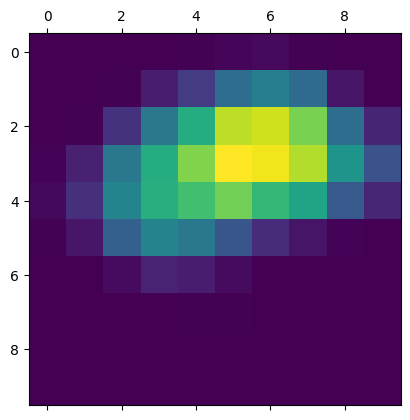

None
Grad-CAM class activation visualization
Author: fchollet
Date created: 2020/04/26
Last modified: 2021/03/07
Description: How to obtain a class activation heatmap for an image classification model.

Adapted from Deep Learning with Python (2017).
Setup
import os
os.environ["KERAS_BACKEND"] = "tensorflow"
import numpy as np
import tensorflow as tf
import keras
# Display
from IPython.display import Image, display
import matplotlib as mpl
import matplotlib.pyplot as plt
Configurable parameters
You can change these to another model.
To get the values for last_conv_layer_name use model.summary()
to see the names of all layers in the model.
model_builder = keras.applications.xception.Xception
img_size = (299, 299)
preprocess_input = keras.applications.xception.preprocess_input
decode_predictions = keras.applications.xception.decode_predictions
last_conv_layer_name = "block14_sepconv2_act"
# The local path to our target image
img_path = keras.utils.get_file(
"african_elephant.jpg", "https://i.imgur.com/Bvro0YD.png"
)
display(Image(img_path))

The Grad-CAM algorithm
def get_img_array(img_path, size):
# `img` is a PIL image of size 299x299
img = keras.utils.load_img(img_path, target_size=size)
# `array` is a float32 Numpy array of shape (299, 299, 3)
array = keras.utils.img_to_array(img)
# We add a dimension to transform our array into a "batch"
# of size (1, 299, 299, 3)
array = np.expand_dims(array, axis=0)
return array
def make_gradcam_heatmap(img_array, model, last_conv_layer_name, pred_index=None):
# First, we create a model that maps the input image to the activations
# of the last conv layer as well as the output predictions
grad_model = keras.models.Model(
model.inputs, [model.get_layer(last_conv_layer_name).output, model.output]
)
# Then, we compute the gradient of the top predicted class for our input image
# with respect to the activations of the last conv layer
with tf.GradientTape() as tape:
last_conv_layer_output, preds = grad_model(img_array)
if pred_index is None:
pred_index = tf.argmax(preds[0])
class_channel = preds[:, pred_index]
# This is the gradient of the output neuron (top predicted or chosen)
# with regard to the output feature map of the last conv layer
grads = tape.gradient(class_channel, last_conv_layer_output)
# This is a vector where each entry is the mean intensity of the gradient
# over a specific feature map channel
pooled_grads = tf.reduce_mean(grads, axis=(0, 1, 2))
# We multiply each channel in the feature map array
# by "how important this channel is" with regard to the top predicted class
# then sum all the channels to obtain the heatmap class activation
last_conv_layer_output = last_conv_layer_output[0]
heatmap = last_conv_layer_output @ pooled_grads[..., tf.newaxis]
heatmap = tf.squeeze(heatmap)
# For visualization purpose, we will also normalize the heatmap between 0 & 1
heatmap = tf.maximum(heatmap, 0) / tf.math.reduce_max(heatmap)
return heatmap.numpy()
Let's test-drive it
# Prepare image
img_array = preprocess_input(get_img_array(img_path, size=img_size))
# Make model
model = model_builder(weights="imagenet")
# Remove last layer's softmax
model.layers[-1].activation = None
# Print what the top predicted class is
preds = model.predict(img_array)
print("Predicted:", decode_predictions(preds, top=1)[0])
# Generate class activation heatmap
heatmap = make_gradcam_heatmap(img_array, model, last_conv_layer_name)
# Display heatmap
plt.matshow(heatmap)
plt.show()
1/1 ━━━━━━━━━━━━━━━━━━━━ 3s 3s/step
Predicted: [('n02504458', 'African_elephant', 9.860664)]

Create a superimposed visualization
def save_and_display_gradcam(img_path, heatmap, cam_path="cam.jpg", alpha=0.4):
# Load the original image
img = keras.utils.load_img(img_path)
img = keras.utils.img_to_array(img)
# Rescale heatmap to a range 0-255
heatmap = np.uint8(255 * heatmap)
# Use jet colormap to colorize heatmap
jet = mpl.colormaps["jet"]
# Use RGB values of the colormap
jet_colors = jet(np.arange(256))[:, :3]
jet_heatmap = jet_colors[heatmap]
# Create an image with RGB colorized heatmap
jet_heatmap = keras.utils.array_to_img(jet_heatmap)
jet_heatmap = jet_heatmap.resize((img.shape[1], img.shape[0]))
jet_heatmap = keras.utils.img_to_array(jet_heatmap)
# Superimpose the heatmap on original image
superimposed_img = jet_heatmap * alpha + img
superimposed_img = keras.utils.array_to_img(superimposed_img)
# Save the superimposed image
superimposed_img.save(cam_path)
# Display Grad CAM
display(Image(cam_path))
save_and_display_gradcam(img_path, heatmap)

Let's try another image
We will see how the grad cam explains the model's outputs for a multi-label image. Let's try an image with a cat and a dog together, and see how the grad cam behaves.
img_path = keras.utils.get_file(
"cat_and_dog.jpg",
"https://storage.googleapis.com/petbacker/images/blog/2017/dog-and-cat-cover.jpg",
)
display(Image(img_path))
# Prepare image
img_array = preprocess_input(get_img_array(img_path, size=img_size))
# Print what the two top predicted classes are
preds = model.predict(img_array)
print("Predicted:", decode_predictions(preds, top=2)[0])
1/1 ━━━━━━━━━━━━━━━━━━━━ 0s 11ms/step
Predicted: [('n02112137', 'chow', 4.610808), ('n02124075', 'Egyptian_cat', 4.3835773)]
We generate class activation heatmap for "chow," the class index is 260
heatmap = make_gradcam_heatmap(img_array, model, last_conv_layer_name, pred_index=260)
save_and_display_gradcam(img_path, heatmap)
We generate class activation heatmap for "egyptian cat," the class index is 285
heatmap = make_gradcam_heatmap(img_array, model, last_conv_layer_name, pred_index=285)
save_and_display_gradcam(img_path, heatmap)